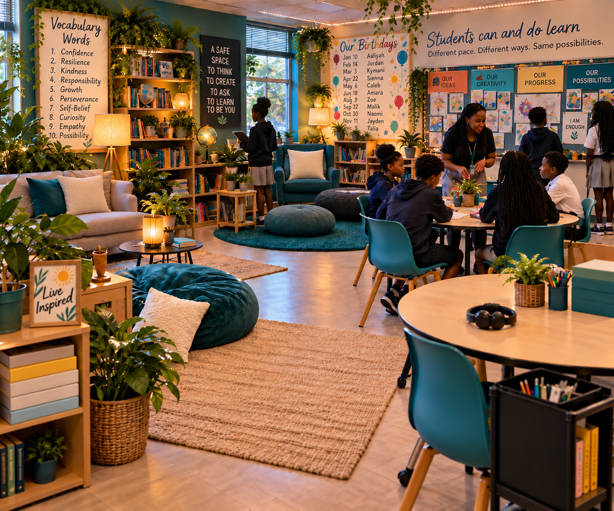

Parent Consultation
If you are watching your child struggle and you are not sure what the school should be doing, what you can do at home, or what the behaviour may be communicating, we can work through it together.
Ask about parent supportPractical Special Education, behaviour and inclusive-learning support for learners, families, educators, schools and organisations.
In this short video, I share who I am, what I have seen across education, and why I am making my Special Education experience available directly to learners, families and educators.
I have spent more than 20 years in education. One thing I know for sure is this: students with Special Educational Needs can and do learn. They may learn at a different pace. They may need information presented differently. They may need different tools, more time, more structure, or a different route into the learning. That does not mean they cannot learn.
With the right tools, resources, teaching and expectations, students with Special Needs can excel. They can work, create, contribute, lead and be productive members of society. We should be preparing them for possibility, not deciding their limits for them.
You do not need to know the professional term for what is happening before asking for help. Start with what you are noticing, where the difficulty is, or what you would like to improve.
If you are watching your child struggle and you are not sure what the school should be doing, what you can do at home, or what the behaviour may be communicating, we can work through it together.
Ask about parent supportThis is not simply more schoolwork. I look at how the learner learns, where the barriers are, what they already understand and what tools may help them access and demonstrate learning.
Ask about learner supportWe move beyond simply saying “include the student” and look at what inclusion means in an actual lesson: differentiation, behaviour, classroom ecology, access, regulation and practical strategies teachers can use.
Explore educator supportI provide workshops, professional development, presentations, in-class support and consultation for schools and organisations seeking practical ways to strengthen inclusion, behaviour support and access to learning.
Tell me what your team needsA learner who refuses to work, leaves their seat or appears disengaged may need more than firmer behaviour management. Sometimes we need to ask what may be preventing that learner from accessing the learning.
Understanding behaviour is only the beginning. Differentiating instruction, breaking tasks into manageable steps and providing appropriate supports can help learners move from frustration and avoidance toward greater independence and engagement.
These resources are for parents and educators who want practical guidance they can return to in their own time.
What we teach matters. How we teach matters. The environment in which students are expected to learn matters too.

That can mean thinking about lighting, noise, seating, movement, clutter, colour and even something as simple as adding plants. A classroom can either help a learner settle, engage and participate, or make learning harder before the lesson even begins.
This matters for every learner. It can matter even more for students with sensory, attention, regulation or communication needs. Differentiation is not only what is on the worksheet. Sometimes it is what we change in the environment so the student can access the learning.
Read: Classroom Ecology, The Missing ConversationA few short details will help me understand your setting, audience and priorities before we speak. You do not need to have the solution worked out already.
Explore my wider work in professional learning, behaviour, wellbeing, leadership, speaking, facilitation and organisational support.
Explore inclusion, differentiation, autism, dyslexia, ADHD, behaviour and practical classroom adjustments through short activities and case studies.
A student can sit in a mainstream classroom all day and still have very little access to the learning taking place. Differentiation asks us to examine the barriers between the learner and the lesson and intentionally remove or reduce them.
A diagnosis can help us understand a learner, but it is not the be all end all. Two students with the same identified need may require very different support.
A student repeatedly puts their head on the desk when a long written task begins. The student participates verbally and appears to understand the discussion.
A learner with attention and regulation difficulties becomes increasingly restless during a long teacher-led explanation.
Before deciding the student is simply refusing, consider whether they understand the task, know how to begin, can manage the amount of information presented, or fear getting it wrong.
Consider attention, regulation, sensory needs, task difficulty, the length of instruction, movement needs and what happens immediately before the student gets up.
Withdrawal may communicate overwhelm, anxiety, confusion, exhaustion or difficulty processing what is happening.
Behaviour still needs boundaries, but effective support also asks what is contributing to the behaviour and what can be changed before escalation occurs.
Think about one learner, lesson or classroom routine. What is one practical adjustment you could make to improve access without lowering the learning expectation?
Whether you are looking for parent consultation, private learning support, teacher training, professional development, in-class support or Special Education consultation, start by telling me what is happening and what you would like to improve.